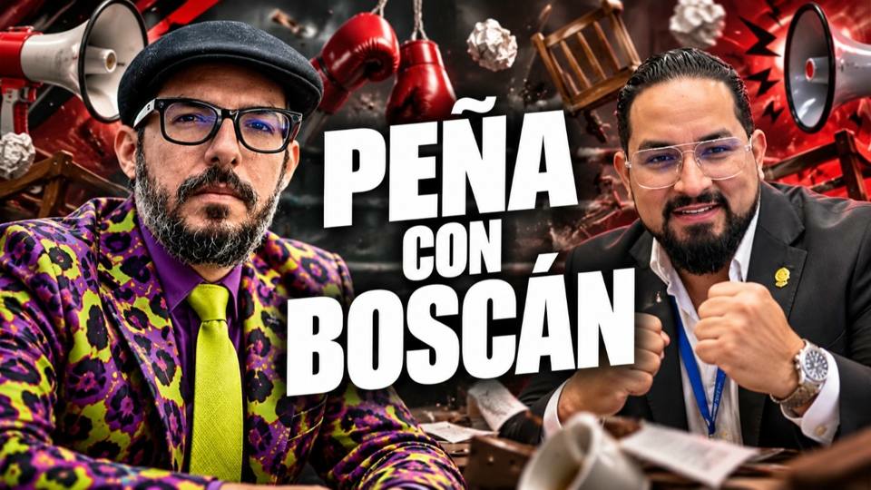
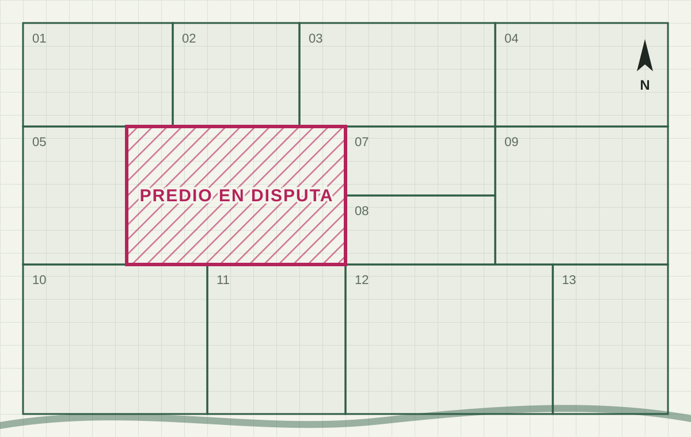

29 oct 2026 · Boscán presenta la grabación del alcalde de Naranjal (desde el minuto 29)
El hijo de un hombre asesinado en Naranjal entró al cuarto del alcalde Juan Carlos Rivera con un teléfono grabando en el bolsillo. Fue a reclamar por una finca que la alcaldía le había movido en el catastro sin avisarle. El alcalde le contestó que él no manda: que al financiero y al jurídico del municipio les ponen una pistola en la cabeza. El abogado Leonardo Toledo guardó la grabación con una condición: que se publicara solo si a él le pasaba algo. Lo asesinaron en Guayaquil el 27 de octubre de 2026. Dos días después Andersson Boscán la mostró completa, y esa misma tarde el movimiento de gobierno le retiró el respaldo al alcalde.

Leonardo Toledo Torres era abogado penalista en Guayaquil. Había defendido a Mayra Salazar en el caso Metástasis y, en los últimos meses, llevaba la defensa de Leonardo Cortázar, preso en la cárcel de máxima seguridad del Encuentro. Llamó a Boscán y a La Moni para contarles que existía información sobre la estructura de Encuentro, guardada por personas que la protegían. No se la entregó. Según Boscán, le dijo que no se iban a aguantar las ganas de publicarla.
Lo que sí les entregó fue otra cosa: tres videos grabados por partes, que en la redacción se unieron en uno solo. El pacto era el que hace mucha gente que manda material a periodistas: guardarlo bajo embargo. Toledo quería pelear el caso en los juzgados, y una grabación expuesta en la prensa antes de tiempo puede perder valor como prueba. Pero si a él le pasaba algo, la grabación podía ser una de las razones, y entonces sí debía salir.
El martes 27 de octubre de 2026 un hombre armado persiguió a Toledo hasta que cayó en la vereda, en Sauces 2. Tenía 49 años. La Policía no ha informado quién lo mató ni por qué. Boscán contó al aire que al abogado le faltaba, además de la vida, su teléfono, y que una de las hipótesis es que buscaban lo que él se disponía a entregar ante un juez en cuatro semanas. Según contó Boscán, cuando a Cortázar le llevaron la noticia a la cárcel, pidió que no permitieran que lo mataran.
El miércoles 28 Boscán y La Moni abrieron el material de Toledo. Era la historia de un alcalde.
Gustavo Santana Ortega fue asesinado el 30 de octubre de 2024 en una gasolinera de Naranjal, junto a dos personas más, por un grupo de hombres armados con pistolas y fusiles que llegó en dos camionetas. Según una fuente policial citada por Expreso, había recibido amenazas y tenía un historial relacionado con actividades ilícitas. Boscán lo describe como un hombre acusado de narcotráfico, cercano a Los Choneros en la pugna por el control del cantón.
Su hijo quedó a cargo de las haciendas. Hace unos meses buscó a Toledo con un problema de tierras: la alcaldía había movido el catastro de una finca rural de la familia y había cambiado su ficha registral sin notificarle. Toledo le dijo que para probar lo que pasaba en el municipio necesitaba una grabación. El hijo de Santana fue a ver al alcalde Juan Carlos Rivera, se sentó con él en un cuarto desordenado y dejó el teléfono grabando en el bolsillo.
No mando. Yo mando, pero me le ponen al financiero la pistola en la cabeza. Le ponen la pistola en la cabeza al jurídico.
Juan Carlos Rivera, alcalde de Naranjal, en la grabación hecha por el hijo de Gustavo Santana
El alcalde primero intenta lavarse las manos: dice que el trámite de la finca pasó por la administración y que lo mandaron a catastro y a jurídico. Cuando el hijo de Santana le reclama que eso sale de sus manos, Rivera responde que no manda. Habla de funcionarios que se fueron porque los querían matar. El hijo de Santana pone el apellido sobre la mesa: los Ochoa. Le dice que como alcalde puede llamar al ministerio y denunciar que los Ochoa están manejando todo, y que él mismo lo lleva ante el ministro del Interior. El alcalde contesta que no puede decir nada.
Eso es la alcaldía, eso es la administración. Eso le mandamos a jurídico.
Lo quiero, lo aprecio, con mi papito Gustavo Santana.
No mando. Yo mando, pero me le ponen al financiero la pistola en la cabeza. Le ponen la pistola en la cabeza al jurídico.
Se fue porque la querían matar.
Pero usted como alcalde puede llamar al ministerio y poner que los Ochoa van a estar manejando todo.
Usted siendo alcalde, yo lo llevo con el ministro. Son criminales, son delincuentes. No es posible que delincuentes estén manejando.
Es que yo no puedo decir algo.
Tira la ficha registral sin comunicarme. Dice que es al mando de los Ochoa.
Yo hago la cita con el ministro del Interior, nos sentamos y arreglamos. Deme la mano.
Mira que maten a este muchacho de sistemas, supuestamente para que no les copie. La misma arma que mata a la Carnero es la arma que mata a mi papá.
Se da un billete a los manes. Tú pones el precio.
Yo no voy a decir eso.
Fragmentos de la grabación completa de 9 minutos y 42 segundos que Andersson Boscán publicó en X el 29 de octubre de 2026. El minuto corresponde a esa grabación. La transcripción es automática, cotejada con la lectura que Boscán hizo al aire; las voces se identifican por el contexto de la conversación. Se omitieron un número de teléfono que se dicta en la grabación y el nombre de una funcionaria.
La grabación del narcoalcalde de Naranjal, Juan Carlos Rivera.
— @AnderssonBoscan Ver en X
Boscán dijo al aire que intentó contactar a Rivera por quince números de celular distintos y que ninguno respondió. Dejó su número público para que el alcalde dé su versión.
Cuando apareció el apellido Ochoa, Boscán recurrió a fuentes policiales y a sus notas. Según esas fuentes, los Ochoa son una familia de Naranjal que se presenta como empresarios prósperos y que tiene una alianza con Los Lobos. Naranjal es un punto de paso para la droga y para el oro de la minería ilegal. En 2023, cuando el cantón estaba partido en dos, Santana padre estaba del lado de Los Choneros y los Ochoa del lado de Los Lobos.
Un policía le explicó a Boscán cómo se hacen de tierras: llegan a la finca con un contrato de cesión de la propiedad, le ponen una pistola en la cabeza al dueño y el dueño firma. Si después quiere denunciar que lo obligaron, le muestran su firma. Así se habrían convertido en terratenientes. Es el mismo terreno en el que pelea el hijo de Santana: un catastro y una ficha registral que cambiaron sin que el dueño se enterara.
En la grabación, el hijo de Santana menciona dos muertes. La de un muchacho de sistemas del municipio, asesinado, dice, para que no copiara información: Franklin Osmani Torres Luna, que recibió al menos seis disparos el 9 de marzo de 2026 a las ocho de la mañana, frente a la iglesia. Y la de la concejala Diana Carnero, asesinada en febrero de 2024. Según el hijo de Santana, el arma que mató a Carnero es la misma que mató a su padre. Ninguna de esas afirmaciones ha sido confirmada por la Fiscalía.
La grabación también muestra al que graba. El hijo de Santana se presenta como millonario, dice que puede pagar seguridad privada y, en un tramo, le propone al alcalde arreglar con los Ochoa pagándoles: que les ofrezca dinero y que ellos pongan el precio. El alcalde le responde que él no va a decir eso. Boscán resumió lo que importa de los diez minutos: un alcalde que admite, ante un tercero, que el poder del municipio está en manos de otros.
La grabación salió al aire en la mañana del jueves 29 de octubre de 2026, en una semana en la que el Gobierno había declarado la guerra a los alcaldes vinculados al narcotráfico. El día anterior la Policía había capturado al alcalde de Vinces, Juan Alfonso Montalbán, por lavado de activos. Boscán advirtió que era la primera vez que mostraba a un narcoalcalde del oficialismo. Sergio Peña, asambleísta aliado de ADN, dijo en el mismo programa que lo consideraba gravísimo y que haría llegar el video a las autoridades.
A las 11:57 Boscán publicó en X la grabación completa. Poco después de las dos de la tarde, ADN difundió un comunicado: retiraba su respaldo político al alcalde y empezaba su desafiliación. José Julio Neira lo compartió pidiendo que se investiguen todos los hechos.
El Movimiento Acción Democrática Nacional (ADN) retira su respaldo político al alcalde de Naranjal, Juan Carlos Rivera, y empieza de inmediato el procedimiento de desafiliación, conforme al Manual de Ética.
Por más amenazas que existan, la forma de cambiar este país es no ceder ante ellas. Nuestra lucha contra el narcotráfico y el crimen organizado es frontal y sin excepciones.
Estamos atentos a que los organismos de control correspondientes continúen con las investigaciones necesarias para esclarecer hechos y determinar responsabilidades. Si se comprueba la comisión de delitos, los involucrados deberán responder ante la justicia, sin privilegios ni interferencias.
En ADN no encubrimos a nadie. Nuestro compromiso con el Ecuador está por encima de cualquier nombre o cargo.
Rivera respondió con un video en sus redes. Lo llamó una campaña sucia y puerca, invitó a otras autoridades a visitar el municipio para que constaten que allí manda y trabaja Juan Carlos Rivera, y no se refirió al contenido de la grabación.
Juan Carlos Rivera gana la alcaldía de Naranjal con el movimiento CREO.
Asesinan a la concejala de Naranjal.
Lo asesinan en una gasolinera de Naranjal junto a dos personas más.
Asesinan a Franklin Torres Luna, funcionario del municipio, frente a la iglesia.
El hijo de Santana graba su conversación con el alcalde por consejo de Leonardo Toledo.
Asesinan al abogado en Sauces 2, en Guayaquil.
Boscán presenta la grabación en su programa y la publica completa en X.
El movimiento de gobierno retira su respaldo al alcalde e inicia su desafiliación.
Alcalde de Naranjal desde 2023. En la grabación dice que no manda y que amenazan con pistolas a sus funcionarios.
Grabó la conversación con el alcalde por un pleito de tierras. En la grabación propone pagarles a los Ochoa.
Abogado penalista. Custodió la grabación bajo embargo y pidió publicarla si le pasaba algo.
Familia de Naranjal que fuentes policiales describen como aliada de Los Lobos. El alcalde y el hijo de Santana los señalan en la grabación.
Padre del que graba. Asesinado en Naranjal en 2024.
En un video en sus redes calificó lo publicado como una campaña sucia y puerca e invitó a otras autoridades a visitar el municipio para que constaten que allí manda y trabaja él. No se refirió a la grabación. Boscán lo buscó en quince números de celular sin respuesta.
Retiró su respaldo político al alcalde e inició su desafiliación conforme a su Manual de Ética. Pidió a los organismos de control continuar las investigaciones.
Pidió en X que se investiguen todos los presuntos hechos y dijo que el movimiento del presidente no respaldará a quienes incumplan su Manual de Ética.
Dijo en el programa que es gravísimo que un alcalde acepte algo así y que haría llegar el video a las autoridades.

Leonardo Cortázar lloró ayer cuando fueron a contarle a eso del mediodía que su abogado Leonardo Toledo había sido desvivido. Se lo contaron los militares que trabajaban para el crimen organizado y cobran por llevar y traer mensajes. Yo no sé si él lo quería mucho. Me supongo que no. se habían visto apenas en tres o cuatro videos de Zoom y no eran amigos antes de la huida de Cortáer que se produjo precisamente cuando…
Leer la transcripción completaTranscripciones de los subtítulos automáticos de cada programa. No están corregidas a mano: sirven para buscar una frase y llegar al minuto exacto del video, no como cita textual literal.
Boscán presenta la grabación en su programa y la publica completa en X a las 11:57.
Poco después de las dos de la tarde, el movimiento de gobierno retira su respaldo al alcalde e inicia su desafiliación.
Rivera habla de una campaña sucia y no responde a lo que dice en la grabación.
No se conocía una investigación de la Fiscalía ni un pronunciamiento del Ministerio del Interior sobre lo que dice la grabación.
El búnker, la carta, la videollamada y el avión a Brooklyn
2026Las pruebas del caso Progen que la fiscal guardó en un cajón
2026Una hora y veinte minutos hasta una quebrada de la Vicentina y un expediente lleno de contradicciones
La grabación fue hecha por el hijo de Gustavo Santana durante una conversación con el alcalde Juan Carlos Rivera y entregada a Boscán y La Moni por el abogado Leonardo Toledo, bajo embargo hasta que a él le pasara algo. Se publicó tras su asesinato. Las citas salen de una transcripción automática de la grabación completa, cotejada con la lectura que Boscán hizo al aire; las voces se identifican por el contexto. Lo que se atribuye a fuentes policiales sobre los Ochoa fue contado al aire por Boscán. Las afirmaciones del hijo de Santana sobre las muertes de Torres Luna y Carnero no han sido confirmadas por la Fiscalía. El plano de la portada es un dibujo ilustrativo hecho por código.